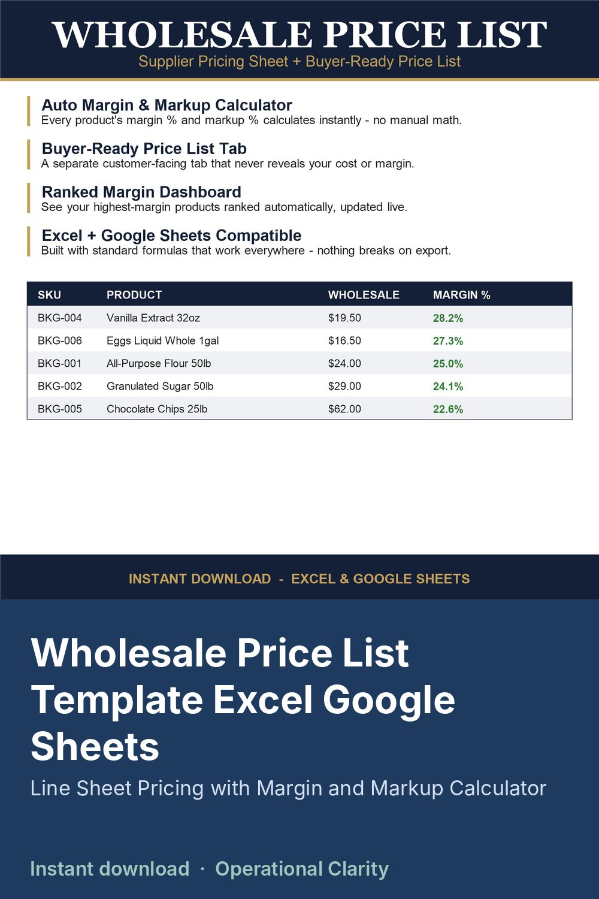

Wholesale Price List Template Excel Google Sheets

Stop doing wholesale pricing math by hand - and stop showing buyers your cost.
This template gives you one master PRODUCTS sheet where you enter your cost and wholesale price, and it instantly calculates your margin % and markup % for every item. A separate CUSTOMER PRICE LIST tab automatically builds a clean, buyer-ready price sheet from that data - showing product, category, wholesale price, case pack, and MOQ, but never your cost or margin. Send that tab straight to buyers.
The DASHBOARD tab shows your average margin, average markup, and your top 5 highest-margin products, ranked automatically.
WHAT'S INCLUDED
- PRODUCTS: master sheet with cost, wholesale price, MSRP, case pack, MOQ, auto margin %, auto markup %
- CUSTOMER PRICE LIST: buyer-facing tab, auto-generated, cost/margin hidden
- DASHBOARD: average margin, average markup, top 5 highest-margin products ranked
- START HERE: setup instructions
WHO THIS IS FOR
Wholesalers, food and beverage suppliers, bakeries, and small manufacturers who quote wholesale prices to retail buyers and want to track margin without doing it by hand every time.
COMPATIBILITY
Built with standard formulas (AVERAGE, IF, SUMPRODUCT, INDEX/MATCH) - works correctly in both Excel and Google Sheets. Comes pre-loaded with sample data so you can see exactly how it works, then replace it with your own products.
DIGITAL DOWNLOAD - no physical item will be shipped. File delivered instantly after purchase.
LICENSE: for personal / single-business use only. Not for resale, sharing, or redistribution (including modified versions).